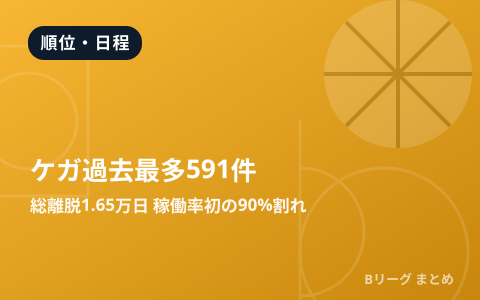
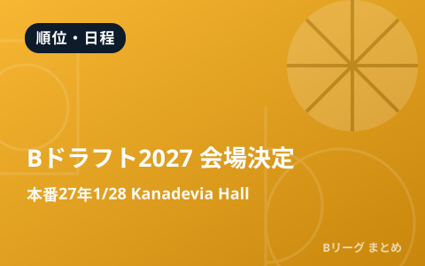
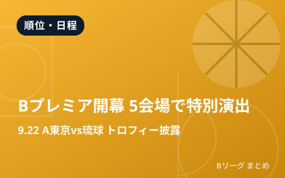

B.PREMIER 順位表
りそなグループ B.LEAGUE 2026-27（B.PREMIER）は9月22日開幕です。開幕後、公式順位表をもとに勝敗・勝率・得失点差を1日3回自動で更新します。
最終確認: 2026-08-28 06:29
公式・メディアの新着
もっと見る ›配信元の見出しとリンクのみを自動収集しています。タップすると元記事が開きます。
2026.08.23
順位・日程
東京サンロッカーズに新マスコットが誕生! サンディーの妹『VINDY(ヴィンディー)』がデビュー、開幕戦で初登場へ
2026.08.19
順位・日程
【U18日清食品トップリーグ2026 ディビジョン2 グループD プレビュー】 四日市メリノール学院vs千葉ジェッツ U18で8月22日開幕!
順位・日程
茨城ロボッツが新チームお披露目会見を実施、ポール・ヘナレヘッドコーチが開幕に向けて意欲を示す「基盤がすごく大事になってくる」
2026.07.31
順位・日程
『FIBA 3×3ウィメンズシリーズ2026』東京STOPに出場する日本代表メンバーが決定、国内ランキング1位の田中平和らが選出
2026.07.14
順位・日程
競技に関する各レギュレーション決定のお知らせ
最終更新:
2026年08月28日 06:29
順位・日程・データ

順位・日程
Bリーグ、選手のケガ過去最多591件 総離脱1万6521日、稼働率が初の90%割れ

順位・日程
「B.LEAGUE DRAFT 2027」会場決定 コンバインは12月17日横浜武道館、本番は27年1月28日Kanadevia Hall

順位・日程
Bプレミア開幕、5会場で特別演出 9月22日はA東京vs琉球で55人パフォーマーがトロフィー披露

順位・日程
B.PREMIER開幕戦はテレビ朝日系で放送 9月22日にA東京vs琉球

順位・日程
新リーグ「Bプレミア」2026-27が9月22日開幕 アルバルク東京vs琉球で幕開け
B1・B2の順位表や日程・結果は、シーズン進行に合わせて見やすい形でまとめていきます。公式の最新データは B.LEAGUE公式サイト もあわせてご確認ください。